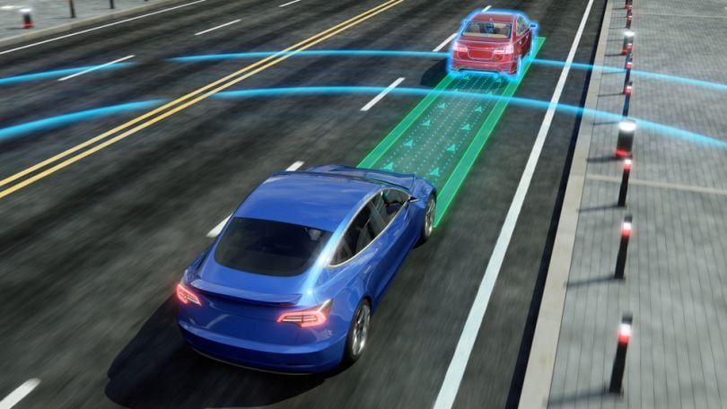

Artificial Intelligence
What is Artificial Intelligence?
Artificial intelligence is a field of science concerned
with building computers and machines that can reason, learn,
and act in such a way that would normally require human
intelligence or that involves data whose scale exceeds what
humans can analyze.
How does AI work?
While the specifics vary across different AI techniques,
the core principle revolves around data.
AI systems learn and improve through exposure to vast amounts of data,
identifying patterns and relationships that humans may miss.
This learning process often involves algorithms,
which are sets of rules or instructions that guide
the AI's analysis and decision-making. In machine learning,
a popular subset of AI, algorithms are trained on labeled
or unlabeled data to make predictions or categorize information.
Artificial intelligence (AI) is a set of technologies that enable computers to perform a variety of advanced functions,
including the ability to see, understand and translate spoken and written language, analyze data, make recommendations, and more. I am including some pictures
with description which represents AI or I can say defines AI .
Artificial intelligent (AI) agents are software entities designed to perceive their environment, make decisions, and take actions autonomously to achieve
specific goals. These agents can interact with users, their environment, or other agents.

Artificial Intelligence in the
Automotive Industry:Car manufacturers use artificial intelligence in just about every facet of the car-making process.Examples of
AI in the automotive industry include industrial robots constructing a vehicle and autonomous cars navigating traffic with machine learning and vision.
Img source :
Builtin.com
Machine learning :
A simple way to think about AI is as a series of nested or derivative concepts that have emerged over more than 70 years.
source
Ibm.com